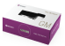
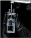
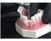
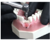

Neodent® Helix GM® Narrow Embalagem do implante
A embalagem do Neodent® foi especialmente
projetada para um manuseio fácil e buscando
obter um procedimento cirúrgico seguro,
proporcionando praticidade desde o armazenamento
dos implantes até a captura e transporte e leito
do implante. As características do implante,
como tipo, diâmetro e comprimento, estão
prontamente Identificadas no exterior da
embalagem
Três etiquetas autoadesivas são fornecidas para
registro no prontuário do paciente e para relato à
equipe protética. Elas também permitem a
rastreabilidade de todos os artigos
Instruções de uso da embalagem
1. As embalagens cartonadas e blister devem ser abertas
manualmente, sem o uso de luvas estéreis. Quebre o selo da
embalagem de papelão e remova o blister. Abra a embalagem
blister. Deposite o frasco estéril sobre o campo
cirúrgico.
Nota: o tubo transparente e o implante devem ser
manuseados com uma luva cirúrgica estéril, em um ambiente
cirúrgico. Segure o frasco usando a mão não dominante e
retire a tampa.
2. Segure o frasco usando a mão não dominante e retire a tampa.
O suporte Interno que contém o implante deve sair fixado na
tampa. Para isso, retire a tampa e o suporte Interno do tubo
transparente no sentido axial sem fazer movimentos laterais
3. Com a mão não dominante, pressione as laterais do suporte
Interno promovendo um “efeito de pinça” e Imobilizando o
implante. Mantenha o suporte pressionado e retire a tampa
4. Para a instalação, segure o implante com a chave para
contra-ângulo, mantendo a conexão estável e girando levemente o
suporte Interno, buscando o encaixe perfeito entre a conexão e o
implante

5. Leve o implante para a cavidade cirúrgica

6. Instale o implante na sua posição final com um torque máximo de
35 N.cm e velocidade de 30 rpm, no sentido horário.
